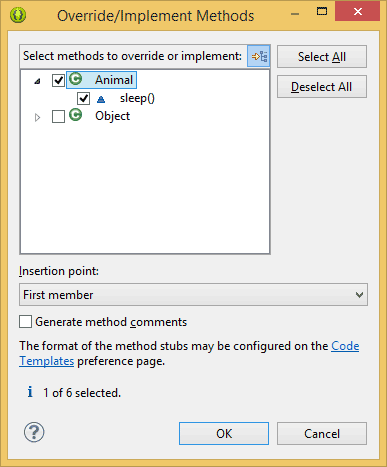

/* Моя кошка замечательно разбирается в программировании. Стоит мне объяснить проблему ей - и все становится ясно. */
John Robbins, Debugging Applications, Microsoft Press, 2000

/* Моя кошка замечательно разбирается в программировании. Стоит мне объяснить проблему ей - и все становится ясно. */
John Robbins, Debugging Applications, Microsoft Press, 2000
Наследование является неотъемлемой частью Java. При использовании наследования вы говорите: Этот новый класс похож на тот старый класс. В коде это пишется как extends, после которого указываете имя базового класса. Тем самым вы получаете доступ ко всем полям и методам базового класса. Используя наследование, можно создать общий класс, которые определяет характеристики, общие для набора связанных элементов. Затем вы можете наследоваться от него и создать новый класс, который будет иметь свои уникальные характеристики. Главный наследуемый класс в Java называют суперклассом. Наследующий класс называют подклассом. Получается, что подкласс - это специализированная версия суперкласса, которая наследует все члены суперкласса и добавляет свои собственные уникальные элементы. К примеру, в Android есть класс View и подкласс TextView.
Чтобы наследовать класс, достаточно вставить имя наследуемого класса с использованием ключевого слова extends:
public class MainActivity extends Activity {
}
В этом коде мы наследуемся от класса Activity и добавляем свой код, который будет отвечать за наше приложение.
Подкласс в свою очередь может быть суперклассом другого подкласса. Так например, упоминавший ранее класс TextView является суперклассом для EditText.
В производный класс можно добавлять новые методы.
Для каждого создаваемого подкласса можно указывать только один суперкласс. При этом никакой класс не может быть собственным суперклассом.
Хотя подкласс включает в себя все члены своего суперкласса, он не может получить доступ к тем членам суперкласса, которые объявлены как private.
Помните, мы создавали класс Box для коробки кота. Давайте наследуемся от этого класса и создадим новый класс, который будет иметь не только размеры коробки, но и вес.
В том же файле Box.java после последней закрывающей скобки добавьте новый код:
class HeavyBox extends Box {
int weight; // вес коробки
// конструктор
HeavyBox(int w, int h, int d, int m) {
width = w;
height = h;
depth = d;
weight = m; // масса
}
}
Возвращаемся в главную активность и пишем код:
HeavyBox box = new HeavyBox(15, 10, 20, 5);
int vol = box.getVolume();
textInfo.setText("Объём коробки: " + vol + " Вес коробки: " + box.weight);
Обратите внимание, что мы вызываем метод getVolume(), который не прописывали в классе HeavyBox. Однако мы можем его использовать, так как мы наследовались от класса Box и нам доступны все открытые поля и методы. Заодно мы вычисляем вес коробки с помощью новой переменной, которую добавили в подкласс.
Теперь у нас появилась возможность складывать в коробку различные вещи. В хозяйстве всё пригодится.

При желании вы можете создать множество разных классов на основе одного суперкласса. Например, мы можем создать цветную коробку.
class ColorBox extends Box {
int color; // цвет коробки
// конструктор
ColorBox(int w, int h, int d, int c) {
width = w;
height = h;
depth = d;
color = c; // цвет
}
}
В Java существует ключевое слово super, которое обозначает суперкласс, т.е. класс, производным от которого является текущий класс. Посмотрим, зачем это нужно.
В конструкторе HeavyBox мы дублировали поля width,height и depth, которые уже есть в классе Box. Это не слишком эффективно. Кроме того, возможны ситуации, когда суперкласс имеет закрытые члены данных, но мы хотим иметь к ним доступ. Через наследование это не получится, так как закрытые члены класса доступны только родному классу. В таких случаях вы можете сослаться на суперкласс.
Ключевое слово super можно использовать для вызова конструктора суперкласса и для обращения к члену суперкласса, скрытому членом подкласса.
Перепишем пример:
class HeavyBox extends Box {
int weight; // вес коробки
// конструктор
// инициализируем переменные с помощью ключевого слова super
HeavyBox(int w, int h, int d, int m) {
super(w, h, d); // вызов конструктора суперкласса
weight = m; // масса
}
}
Вызов метода super() всегда должен быть первым оператором, выполняемым внутри конструктора подкласса.
При вызове метода super() с нужными аргументами, мы фактически вызываем конструктор Box, который инициализирует переменные width, height и depth, используя переданные ему значения соответствующих параметров. Вам остаётся инициализировать только своё добавленное значение weight. При необходимости вы можете сделать теперь переменные класса Box закрытыми. Проставьте у полей класса Box модификатор private и убедитесь, что вы можете обращаться к ним без проблем.
У суперкласса могут быть несколько перегруженных версий конструкторов, поэтому можно вызывать метод super() с разными параметрами. Программа выполнит тот конструктор, который соответствует указанным аргументам.
Вторая форма ключевого слова super действует подобно ключевому слову this, только при этом мы всегда ссылаемся на суперкласс подкласса, в котором она использована. Общая форма имеет следующий вид:
super.член
Здесь член может быть методом либо переменной экземпляра.
Подобная форма подходит в тех случаях, когда имена членов подкласса скрывают члены суперкласса с такими же именами.
class A {
int i;
}
// наследуемся от класса A
class B extends A {
int i; // имя переменной совпадает и скрывает переменную i в классе A
B(int a, int b) {
super.i = a; // обращаемся к переменной i из класса A
i = b; // обращаемся к переменной i из класса B
}
void show() {
System.out.println("i из суперкласса: " + super.i);
System.out.println("i в подклассе: " + i);
}
}
class MainActivity {
B subClass = new B(1, 2);
subClass.show();
}
В результате мы должны увидеть:
i из суперкласса: 1 i в подклассе: 2
Таким образом, знакомое нам выражение super.onCreate(savedInstanceState) обращается к методу onCreate() из базового класса.
Мы использовали простые примеры, состоящие из суперкласса и подкласса. Можно строить более сложные конструкции, содержащие любое количество уровней наследования. Например, класс C может быть подклассом класса B, который в свою очередь является подклассом класса A. В подобных ситуациях каждый подкласс наследует все характеристики всех его суперклассов.
Напишем пример из трёх классов. Суперкласс Box, подкласс HeavyBox и подкласс MoneyBox. Последний класс наследует все характеристики классов Box и HeavyBox, а также добавляет поле cost, которое содержит стоимость коробки.
package ru.alexanderklimov.quickcourse;
class Box {
private int width; // ширина коробки
private int height; // высота коробки
private int depth; // глубина коробки
// Конструктор для создания клона объекта
Box(Box ob) { // передача объекта конструктору
width = ob.width;
height = ob.height;
depth = ob.depth;
}
// Конструктор, используемый при указании всех измерений
Box(int w, int h, int d) {
width = w;
height = h;
depth = d;
}
// Конструктор, используемый, когда ни одно из измерений не указано
Box() {
// значение -1 используется
// для указания неинициализированного параллелепипеда
width = -1;
height = -1;
depth = -1;
}
// Конструктор для создания куба
Box(int len) {
width = height = depth = len;
}
// вычисляем объём коробки
int getVolume() {
return width * height * depth;
}
}
package ru.alexanderklimov.quickcourse;
//Добавление веса
class HeavyBox extends Box {
int weight; // вес коробки
// Конструктор клона объекта
HeavyBox(HeavyBox ob) { // передача объекта конструктору
super(ob);
weight = ob.weight;
}
// Конструктор, используемый
// при указании всех параметров
HeavyBox(int w, int h, int d, int m) {
super(w, h, d); // вызов конструктора суперкласса
weight = m; // масса
}
// Конструктор по умолчанию
HeavyBox() {
super();
weight = -1;
}
// Конструктор для создания куба
HeavyBox(int len, int m) {
super(len);
weight = m;
}
}
package ru.alexanderklimov.quickcourse;
//Цена коробки
class MoneyBox extends HeavyBox {
int cost;
// Конструирование клона объекта
MoneyBox(MoneyBox ob) { // передача объекта конструктору
super(ob);
cost = ob.cost;
}
// Конструктор, используемый
// при указании всех параметров
MoneyBox(int w, int h, int d, int m, int c) {
super(w, h, d, m); // вызов конструктора суперкласса
cost = c;
}
// Конструктор по умолчанию
MoneyBox() {
super();
cost = -1;
}
// Конструктор для создания куба
MoneyBox(int len, int m, int c) {
super(len, m);
cost = c;
}
}
Код для основной активности, например, при щелчке кнопки:
public void onClick(View v) {
MoneyBox moneybox1 = new MoneyBox(100, 200, 150, 100, 300);
MoneyBox moneybox2 = new MoneyBox(20, 30, 40, 7, 10);
int vol;
vol = moneybox1.getVolume();
Log.i("Java-курс", "Объем первой коробки равен " + vol);
Log.i("Java-курс", "Вес первой коробки равен " + moneybox1.weight);
Log.i("Java-курс", "Цена коробки: " + moneybox1.cost);
vol = moneybox2.getVolume();
Log.i("Java-курс", "Объем второй коробки равен " + vol);
Log.i("Java-курс", "Вес второй коробки равен " + moneybox2.weight);
Log.i("Java-курс", "Цена коробки: " + moneybox2.cost);
}
В результате мы получим различные значения, вычисляемые в коде. Благодаря наследованию, класс MoneyBox может использовать классы Box и HeavyBox, добавляя только ту информацию, которая нам требуется для его собственного специализированного применения. В этом и состоит принцип наследования, позволяя повторно использовать код.
Метод super() всегда ссылается на конструктор ближайшего суперкласса в иерархии. Т.е. метод super() в классе MoneyBox вызывает конструктор класса HeavyBox, а метод super() в классе HeavyBox вызывает конструктор класса Box.
Если в иерархии классов конструктор суперкласса требует передачи ему параметров, все подклассы должны передавать эти параметры по эстафете.
В иерархии классов конструкторы вызываются в порядке наследования, начиная с суперкласса и заканчивая подклассом. Если метод super() не применяется, программа использует конструктор каждого суперкласса, заданный по умолчанию или не содержащий параметров.
Вы можете создать три класса A, B, C, которые наследуются друг от друга (A←B←C), у которых в конструкторе выводится текст и вызвать в основном классе код:
C c = new C();
Вы должные увидеть три строчки текста, определённые в каждом конструкторе класса. Поскольку суперкласс ничего не знает о своих подклассах, любая инициализация полностью независима и, возможно, обязательна для выполнения любой инициализацией, выполняемой подклассом.
Если в иерархии классов имя и сигнатура типа метода подкласса совпадает с атрибутами метода суперкласса, то метод подкласса переопределяет метод суперкласса. Когда переопределённый метод вызывается из своего подкласса, он всегда будет ссылаться на версию этого метода, определённую подклассом. А версия метода из суперкласса будет скрыта.
Если нужно получить доступ к версии переопределённого метода, определённого в суперклассе, то используйте ключевое слово super.
Не путайте переопределение с перегрузкой. Переопределение метода выполняется только в том случае, если имена и сигнатуры типов двух методов идентичны. В противном случае два метода являются просто перегруженными.
В Java SE5 появилась запись @Override; она не является ключевым словом. Если вы собираетесь переопределить метод, используйте @Override, и компилятор выдаст сообщение об ошибке, если вместо переопределения будет случайно выполнена перегрузка.
Для закрепления материала создадим класс Animal с одним методом.
package ru.alexanderklimov.quickcourse;
public class Animal {
String sleep(){
return "Животные иногда спят";
}
}
Теперь создадим класс Cat, наследующий от первого класса.
package ru.alexanderklimov.quickcourse;
public class Cat extends Animal {
}
Java знает, у родительского класса есть метод sleep(). Удостовериться можно следующим образом. Находясь в классе Cat, выберите в меню Source | Override/Implement Methods.... Появится диалоговое окно, где можно отметить флажком нужный метод.

В результате в класс будет добавлена заготовка:
@Override
String sleep() {
// TODO Auto-generated method stub
return super.sleep();
}
Попробуем вызвать данный метод в основном классе активности:
public void onClick(View v) {
Cat barsik = new Cat();
textViewInfo.setText(barsik.sleep());
}
Мы получим текст, который определён в суперклассе, хотя вызывали метод дочернего класса.
Но если мы хотим получить другой текст, совсем не обязательно придумывать новые методы. Достаточно закомментировать вызов метода из суперкласса и добавить свой вариант.
@Override
String sleep() {
// TODO Auto-generated method stub
//return super.sleep();
return "Коты постоянно спят!";
}
Запускаем программу и нажимаем на кнопку. И получим уже другой ответ, более соответствующий описанию среднестатистического кота. Заметьте, что код для щелчка кнопки мы не меняем, но система сама разберётся, что выводить нужно текст не из суперкласса, а из дочернего класса.
Рассмотрим другой пример переопределения методов. Создадим суперкласс Figure, который будет содержать размеры фигуры, а также метод для вычисления площади. А затем создадим два других класса Rectangle и Triangle, у которых мы переопределим данный метод.
class Figure {
double dim1;
double dim2;
Figure(double a, double b) {
dim1 = a;
dim2 = b;
}
double area() {
System.out.printLn("Площадь фигуры");
return 0;
}
}
class Rectangle extends Figure {
Rectangle(double a, double b) {
super(a, b);
}
// Переопределяем метод
double area() {
System.out.println("Площадь прямоугольника");
return dim1 * dim2;
}
}
class Triangle extends Figure {
Triangle(double a, double b) {
super(a, b);
}
// переопределяем метод
double area() {
System.out.println("Площадь треугольника");
return dim1 * dim2 / 2;
}
}
// В главной активности
Figure figure = new Figure(10, 10);
Rectangle rectangle = new Rectangle(8, 5);
Triangle triangle = new Triangle(10, 6);
Figure fig;
fig = figure;
textInfo.setText("Площадь равна " + fig.area);
fig = rectangle;
textInfo.setText("Площадь равна " + fig.area);
fig = triangle;
textInfo.setText("Площадь равна " + fig.area);
Как видите, во всех классах используется одно и тоже имя метода, но каждый класс по своему вычисляет площадь в зависимости от фигуры. Это очень удобно и позволяет не придумывать новые названия методов в классах, которые наследуются от базового класса.